Preference
To make it friendly and timesaving, we always need the personal settings, like the shortcus, search engine and etc. Clicking "Edit - Preferences" on the menu, we can find so many personal settings below.
- Change the general settings about XMind 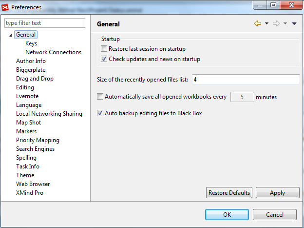
- Select the command in field, and then change its binding shortcuts in below dialog to change/add the shortcuts in XMind. 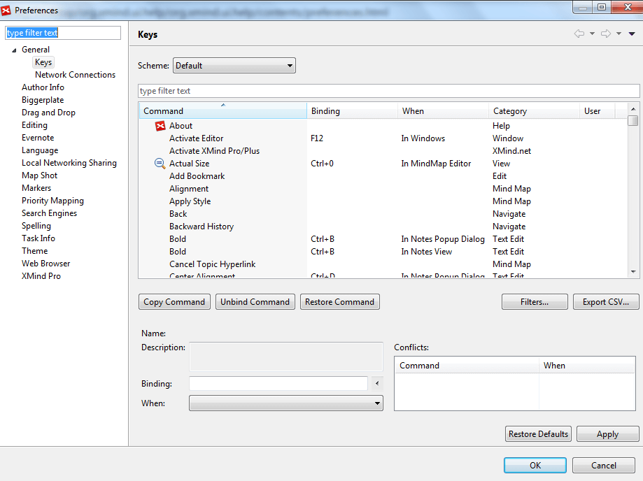
- You can change the network connections here. 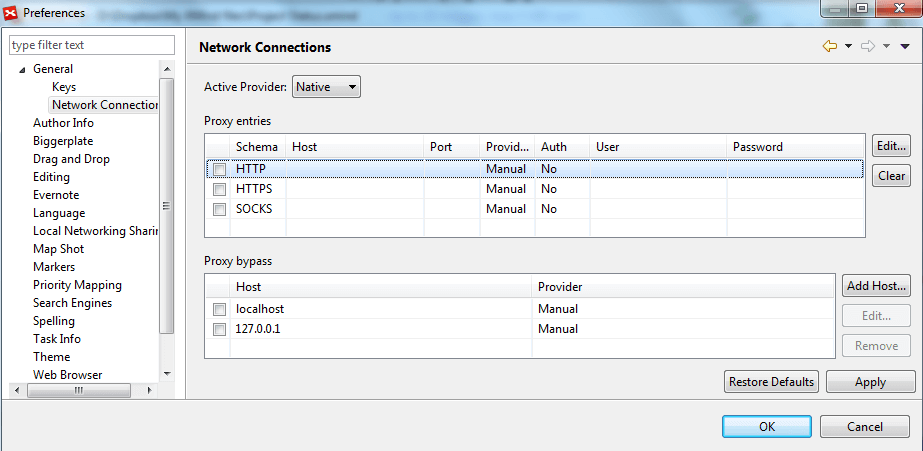
- You can set your author info here, which will be saved into the file you created and showed in Inspector view. 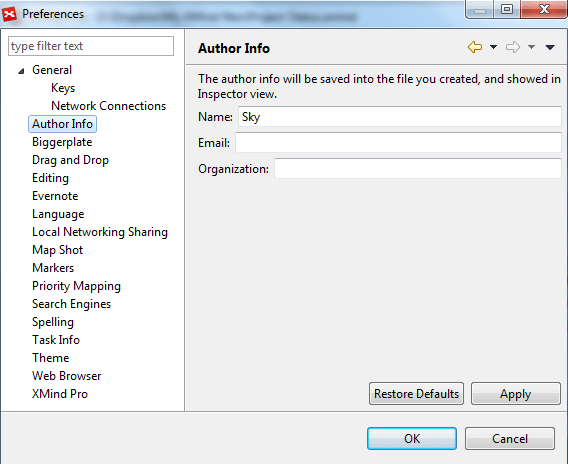
- Link or unlink Biggerplate account here. 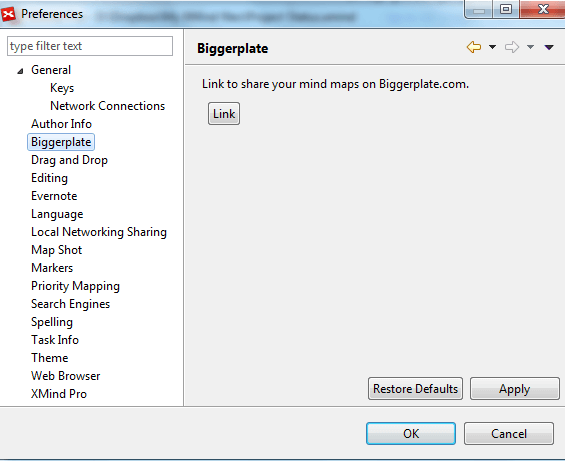
- Set the meaning of drag and drop a local file into XMind software here.
- Adjust the general settings about Mind Map.
- Link and unlink evernote account 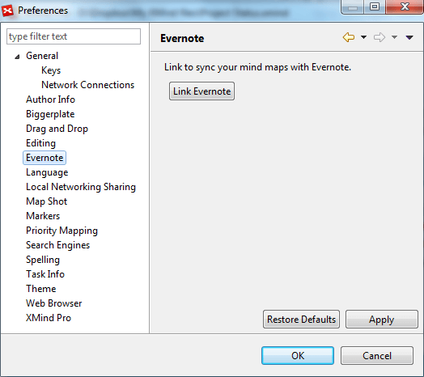
- You can change XMind display language here. 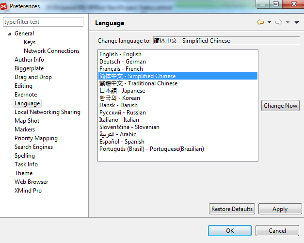
- Enable or disable the Local Network Sharing functionality, and name your computer. 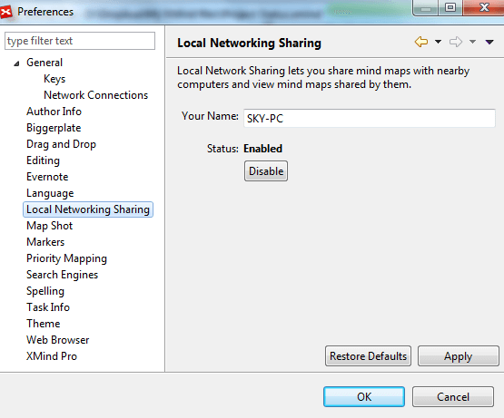
- Decide whether to send an copy of the map-shot to a local folder. 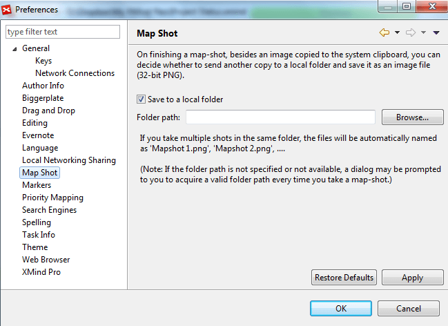
- Add the marker group firstly at the uppper part, and add the markers into group at the bottom part. 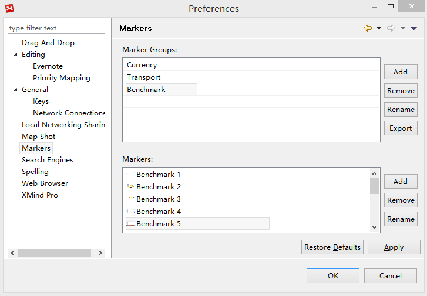
- Define how XMind priorities are maped to Microsoft Project priorities. 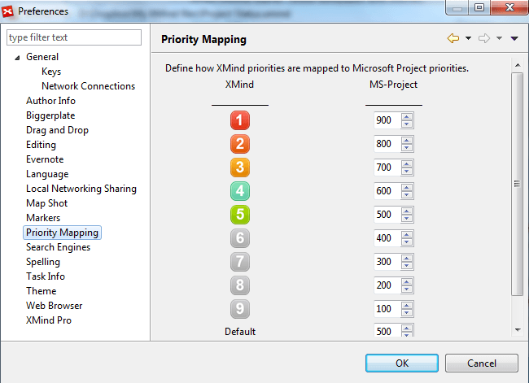
- Choose your favorite search engine.
- Change the options about Spell checker, and add your own dictionary(.dict) into XMind. 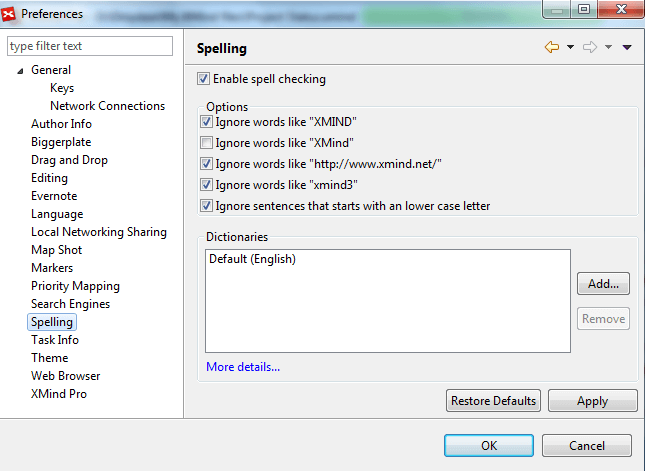
- Record the task assignees here. 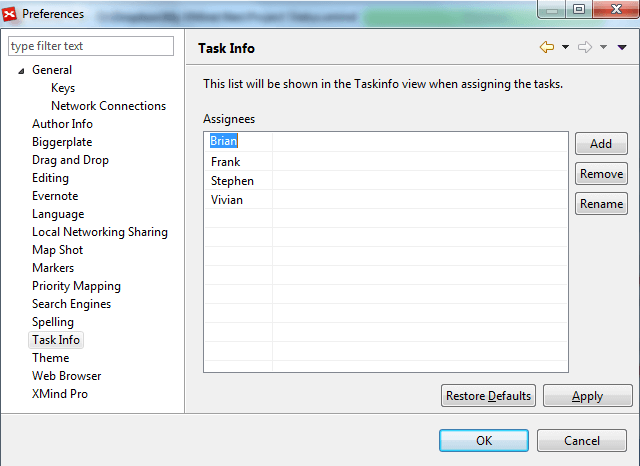
- Define override or keep custom styles while applying a new theme. 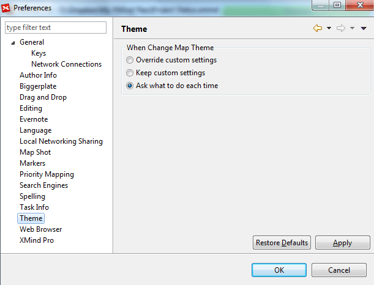
- Decide if using the internal Web Browser to open the hyperlink in topics. 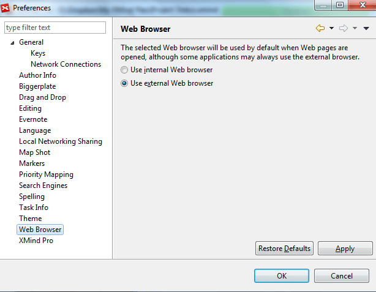
- Upgrade to XMind Pro, or hide the paid features. 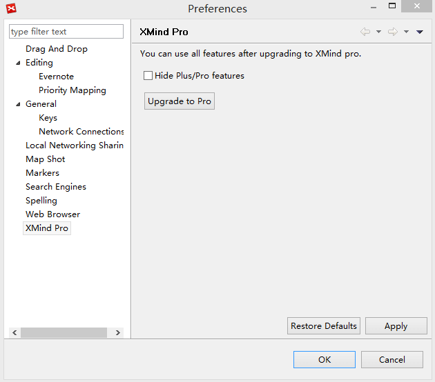
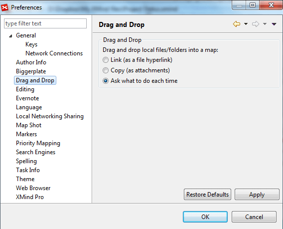
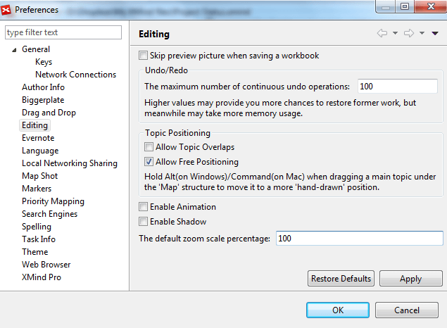